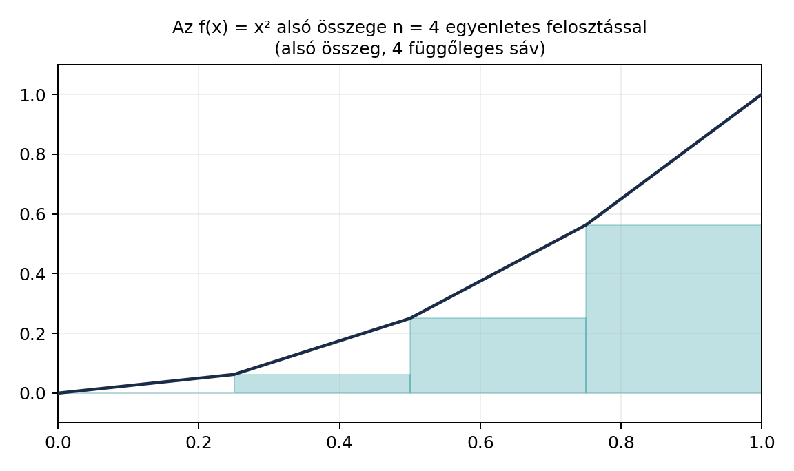

15.1 A terület problémája:
felosztások, alsó és felső összegek
15.1.1 Motiváció: görbe alatti
terület és felhalmozott mennyiség
Hogyan mérjük meg egy görbe alatti területet? Archimédész már több
mint kétezer éve kiszámította a parabolaszelet területét úgy, hogy a
síkidomot egyre több, egyre keskenyebb téglalappal töltötte ki, illetve
fedte le. Ugyanez a gondolat vezet a modern integrálfogalomhoz.
A terület mellett két másik, látszólag eltérő kérdés is ugyanehhez a
szerkezethez vezet:
Ha ismerjük egy autó sebességét az idő függvényében, hogyan
számítjuk ki a megtett utat?
Ha ismerjük egy csőben áramló szennyezőanyag koncentrációját, mennyi
anyag halmozódik fel adott idő alatt?
Mindhárom esetben egy felhalmozott mennyiség és egy
ráta (terület és magasság, út és sebesség,
anyagmennyiség és koncentráció) közötti kapcsolatot keresünk. A
stratégia: daraboljuk fel a tartományt, minden darabon becsüljük a
mennyiséget egy-egy téglalappal, majd finomítsuk a felosztást. Ebben az
alfejezetben ezt a becslési eljárást tesszük pontossá az alsó és
felső összeg fogalmával.
15.1.2 Szemléletes kép:
téglalapokkal a terület felé
Tekintsük az
függvényt a
intervallumon. Osszuk a
-et
négy egyenlő részre, és rajzoljunk minden részintervallum fölé olyan
téglalapot, amelynek magassága a függvény kisebbik
értéke az intervallum két végpontja közül. Mivel
monoton nő, ez mindig a bal oldali végponti érték.

Az f(x) = x² alsó összege n = 4
egyenletes felosztással - A kiszámított alsó összeg: (0² + 0,25² + 0,5²
+ 0,75²) · 0,25 = 0,21875; a pontos terület 1/3 ≈ 0,33333, a felső
összeg ugyanezzel a felosztással 0,46875. A sávok magassága az
intervallumok bal oldali értéke, mert a függvény monoton
nő.
A négy bal oldali téglalap összterülete:
Ez nyilván kisebb, mint a pontos terület. Ha a
téglalapok magasságát a jobb oldali végponti értékekből vesszük, akkor a
terület nagyobb lesz:
A pontos terület e két érték között van. A felosztást finomítva a két
becslés közelít egymáshoz, és a közös határérték lesz a terület.
15.1.3 Felosztás, alsó és felső
összeg
Legyen
korlátos függvény az
intervallumon.
Definíció. Az
intervallum felosztása (partition) olyan véges
ponthalmaz, amelyre
A részintervallumok hossza:
A felosztás finomsága (mesh):
Azt mondjuk, hogy a
felosztás finomítása (refinement) a
felosztásnak, ha
,
vagyis
minden
-beli
osztópontot tartalmaz (és esetleg továbbiakat is).
Mivel
korlátos, minden részintervallumon létezik a függvényértékek alsó és
felső korlátja. Jelölje
Definíció. Az
függvény
felosztáshoz tartozó alsó összege (lower sum):
Megjegyzés. A felosztás finomsága azt méri, milyen
vastag a legvastagabb részintervallum. A finomítás viszont nem
feltétlenül csökkenti a finomságot: ha az egyetlen leghosszabb
részintervallumot elfelezzük, a finomság csökken; ha viszont több
leghosszabb van, vagy egy rövid intervallumot osztunk tovább, a
legnagyobb hossz változatlan maradhat.
15.1.4 A finomítási lemma és a
rendezés
A következő állítás a módszer alapja: a finomítás
javítja a becslést.
Tétel (finomítási lemma). Ha
finomítása a
felosztásnak, akkor
Bizonyítási terv. Elég egyetlen új osztópont
hozzáadását vizsgálni, mert egy általános finomítás véges sok ilyen
lépésből áll. Ha egy részintervallumot kettévágunk, az új
részintervallumokon az
nem lehet kisebb, mint az eredeti intervallum
je,
ezért az alsó összeg nem csökken. A felső összegre hasonló érvelés
adódik
-mal.
Bizonyítás. Először tegyük fel, hogy
egyetlen új
pontot tartalmaz
-hez
képest, és
.
Jelölje a két új részintervallumot
és
,
a hozzájuk tartozó infimumokat pedig
és
.
Minthogy
,
az
infimum legalább akkora, mint
;
ugyanígy
.
Ez azért igaz, mert egy kisebb halmazon vett alsó korlát nem lehet
kisebb az eredeti halmaz alsó korlátjánál. Így
Az összes többi részintervallumban a tagok változatlanok, tehát
.
A felső összegnél ugyanezen a két részintervallumon
és
,
ezért
így
.
Ha
több pontot ad hozzá, a fenti lépést egymás után ismételjük; minden
lépésben az alsó összeg nem csökken, a felső nem nő. ∎
Ebből következik az integrálhatóság szempontjából alapvető
rendezés.
Tétel (bármely alsó összeg ≤ bármely felső összeg).
Tetszőleges
és
felosztások esetén
Bizonyítás. Legyen
a két felosztás közös finomítása. Ekkor
mind
-nek,
mind
-nek
finomítása. A finomítási lemma szerint
Ugyanarra a
-ra
nyilván
,
hiszen minden részintervallumon
,
ezért
∎
A tétel tartalma: egyetlen alsó összeg sem lehet
nagyobb egyetlen felső összegnél, akármilyen
felosztásokhoz tartoznak is.
A fenti rendezés lehetővé teszi, hogy az összes alsó, illetve az
összes felső összeg halmazának határát tekintsük.
Definíció. Az
korlátos függvény alsó Darboux-integrálja az
intervallumon:
felső Darboux-integrálja pedig:
Mivel
korlátos, mindkét halmaz korlátos, így a szuprémum és az infimum létezik
a teljességi axióma (lásd Szuprémum, infimum és a
teljességi axióma) miatt. A bármely alsó ≤ bármely felső tételből
következik:
Ha a két érték egyenlő, azt mondjuk, hogy
Darboux-integrálható az
-en,
és a közös értéket
jelöli. A pontos Riemann-integrálhatóság
definícióját és a kettő kapcsolatát a következő alfejezetben tárgyaljuk;
itt egyelőre a Darboux-féle megközelítés alapjait építjük fel.
15.1.6 Kidolgozott példa:
Példa. Számítsuk ki az
függvény alsó és felső összegét a
intervallumon az egyenletes felosztásra, és mutassuk meg, hogy a
határértékük közös:
.
Megoldás. Legyen az
egyenlő részre osztó felosztás
Minden részintervallum hossza
.
Mivel
monoton növekvő a
-en,
Az alsó összeg:
A felső összeg:
Használjuk az ismert négyzetösszeg-képletet:
Így
és az alsó összegnél
-ig
összegzünk:
Most vizsgáljuk a határértéket. A felső összegre:
Az alsó összegre hasonlóan:
Tehát az alsó és felső összeg határértéke egyaránt
.
Ebből következik, hogy az alsó Darboux-integrál és a felső
Darboux-integrál sem lehet más, mint
,
hiszen
és a közrefogott sorozat határértéke
.
Ezért
Ellenőrzés. Például
esetén
és a pontos érték
valóban a két becslés közé esik.
Az alábbi ábra három egyenletes felosztáson mutatja a beírt (alsó) és
a köré írt (felső) téglalapokat:
növelésével
nő,
csökken, a köztük lévő rés pedig pontosan
.
Statikus változat (mint a PDF-ben)
Az
alsó és felső összegei a
-en
egyenletes felosztásra
();
a felső összeg többlete
Továbbvitt eredmény. A
eredményt felhasználjuk a Az analízis alaptétele és
a Newton–Leibniz-formula alfejezetben, ahol ugyanezt az értéket a
primitív függvény segítségével is kiszámítjuk, és ellenőrizzük, hogy a
két megközelítés megegyezik.
Ellenőrizzük, hogy
monoton növő vagy monoton csökkenő az
-en.
Válasszunk egy
felosztást, gyakran egyenletes felosztást:
,
.
Minden részintervallumon határozzuk meg az infimumot és a
szuprémumot. Monoton növő függvénynél
és
;
monoton csökkenőnél fordítva.
Írjuk fel az alsó összeget
és a felső összeget
alakban.
Az összegeket ismert összegképletekkel (pl.
,
,
)
zárjuk alakra.
Vizsgáljuk a határértéket
esetén. Ha az alsó és felső összeg határértéke megegyezik, a közös érték
lesz az integrál.
15.1.8 Valós életbeli alkalmazás:
megtett út sebességmérésekből
Egy gyorsuló autó sebességét 10 másodpercenként mérik a
és
s közötti időszakban. A mért értékek:
(s)
0
10
20
30
40
50
60
(m/s)
0
4
8
12
16
20
24
A mérési pontokban a sebesség monoton nő, és tegyük fel, hogy az
egyes 10 másodperces intervallumokon belül is monoton nő. Ekkor az
intervallum elején mért sebesség alsó, az intervallum
végén mért sebesség felső becslés az intervallumbeli
sebességre.
A megtett út alsó becslése:
A felső becslés:
Tehát a tényleges út a modell feltételei mellett
és
méter között van. A becslések úgy értelmezhetők, mint a sebesség-idő
grafikon alatti terület alsó és felső összege.
A modell korlátja: ha a sebesség az intervallumon belül ingadozik, a
két végpontból vett alsó–felső becslés már nem érvényes általában.
Sűrűbb méréssel a bizonytalanság csökkenthető, és a becslések
közelítenek a tényleges úthoz.
15.1.9 Tipikus hibák
Az
és
összekeverése a végponti értékekkel. Nem monoton függvénynél az
alsó összeg nem feltétlenül a bal oldali, a felső pedig nem feltétlenül
a jobb oldali végponti értékkel számolandó. Mindig a részintervallumon
vett
és
kell. Például
a
-en
a
felosztásnál az
,
nem pedig
.
A finomítás hatásának félreértése. Sokan azt
gondolják, hogy a finomítás az alsó összeget csökkentheti, mert több,
kisebb sávra osztunk. Valójában az alsó összeg monoton nő, a felső
monoton csökken a finomítással: az új, kisebb részintervallumokon az
nem csökkenhet, a
nem nőhet.
A rendezési tétel félreértése. Nem arról van szó,
hogy
csak akkor áll fenn, ha
finomítja
-t.
A tétel szerint bármely
és
felosztásra igaz, mert a közös finomításon keresztül mindig
összekapcsolhatók.
A Weierstrass-tétel feltételeinek elfelejtése. Csak
folytonos függvénynél garantált, hogy az
és
felvétetik a részintervallumon. Nem folytonos, de korlátos függvénynél
az
vagy
lehet olyan, amit a függvény nem vesz fel; ekkor is az
,
értéket kell használni.
Az összegképletek hibás alkalmazása. Például
nem ugyanaz, mint
;
az alsó összegnél a felső határ
,
ezért a képletet
-re
kell alkalmazni.
15.1.10 Önellenőrzés
Igaz vagy hamis? Ha
finomítása
-nek,
akkor
.
Számítsd ki az
függvény alsó összegét a
-en
a
felosztással!
Mennyi a
felosztás finomsága?
Igaz vagy hamis? Ha
folytonos az
-en,
akkor minden részintervallumon
és
.
Milyen egyenlőtlenség áll fenn az
és
Darboux-integrálok között?
Hány méter az alsó becslés a fenti sebességmérési példában, ha csak
a 0, 10, 20 másodperces méréseket használjuk fel?
15.1.11 Feladatok
1. feladat (A). Legyen
a
-n
és
.
Számítsd ki
-t
és
-t!
2. feladat (A). Legyen
a
-n
és
.
Számítsd ki
-t
és
-t!
3. feladat (B). Számítsd ki az
alsó és felső összegét a
intervallumon az egyenletes,
egyenlő részre osztó felosztással, majd igazold, hogy a határértékük
.
(Ez a feladat előkészíti a Newton–Leibniz-formula alkalmazását.)
4. feladat (B). Legyen
a
-en.
Az egyenletes felosztással számítsd ki az alsó és felső összeget, és
igazold, hogy a közös határérték
!
Használd a
azonosságot.
5. feladat (C). Bizonyítsd be részletesen, hogy
tetszőleges
felosztásokra
,
felhasználva a közös finomítást és a finomítási lemmát!
6. feladat (D). Egy folyóba ömlő szennyezőanyag
koncentrációját 5 percenként mérik:
.
A folyó vízhozama állandóan
.
A koncentráció a mérési pontokban monoton nő, és feltesszük, hogy az
intervallumokon is monoton nő. Adj alsó és felső becslést a 30 perc
alatt elszállított szennyezőanyag tömegére! (Útmutatás:
a tömeg = vízhozam × a koncentráció-idő grafikon alatti terület; a
vízhozam konstans szorzó.)
15.1.12 Megoldások
15.1.12.1 Önellenőrzés –
válaszok
Hamis. Finomításkor a felső összeg nem nő, tehát
.
:
,
,
mindkét rész hossza
,
így
.
,
mert a részintervallum-hosszak:
,
,
;
a maximum
.
Igaz, a Weierstrass-tétel miatt a folytonos
függvény minden korlátos zárt részintervallumon felveszi a minimumát és
maximumát.
.
A mérések:
m/s. Alsó becslés:
m.
15.1.12.2 1. feladat
,
monoton nő. Az intervallumok:
és
,
mindkettő hossza
.
Alsó összegnél a bal oldali, felsőnél a jobb oldali értékekkel
számolunk:
15.1.12.3 2. feladat
monoton nő a
-en,
.
A részintervallumok hossza
.
A végponti értékek:
,
,
.
Ezért
15.1.12.4 3. feladat
Egyenletes felosztás a
-n:
,
,
részintervallum-hossz
.
Mivel
monoton nő,
Így
Határértékük:
15.1.12.5 4. feladat
monoton nő a
-en.
Egyenletes felosztással
,
.
Az alsó összeg:
Felső összeg:
Mindkettő határértéke
,
hiszen
15.1.12.6 5. feladat
A bizonyítás megegyezik a szövegbeli tételével. Vegyünk tetszőleges
és
felosztást, és legyen
.
Ekkor
közös finomítás. A finomítási lemma miatt
és
.
Ugyanarra a
-ra
részintervallumonként
,
ezért
.
A három egyenlőtlenséget összefűzve
adódik. ∎
15.1.12.7 6. feladat
A koncentrációmérések:
,
.
A vízhozam
,
tehát a tömegáram
().
Ha a koncentráció monoton nő, az alsó becslés az intervallum eleji
koncentrációval, a felső pedig az intervallum végi koncentrációval
számol. Az alsó becslés a koncentráció-idő területre:
A felső becslés:
A tömeg becslései úgy kaphatók, hogy megszorozzuk a
vízhozammal (mert
);
a mértékegység:
.
Az alsó tömegbecslés:
a felső:
Az eredmény értelmezése: a 30 perc alatt elszállított szennyezőanyag
tömege – ha a monoton növekedési feltétel igaz –
és
között van. A modell korlátja, hogy a koncentráció ingadozása esetén ez
a sáv nem feltétlenül érvényes; sűrűbb mérés csökkentené a
bizonytalanságot.
15.1.13 Rövid összefoglaló
Ebben az alfejezetben bevezettük az
intervallum felosztását, finomságát és finomítását. Egy
korlátos
függvényre minden
felosztás mellett definiáltuk az alsó összeget
és a felső összeget
,
ahol
és
a
-adik
részintervallumon. Megmutattuk, hogy
,
és beláttuk a finomítási lemmát: ha
finomítja
-t,
akkor
és
.
Ebből következett, hogy bármely alsó összeg ≤ bármely felső
összeg. Bevezettük az alsó és felső Darboux-integrált:
,
,
amelyekre
.
Az
példán egyenletes felosztással kiszámoltuk, hogy az alsó és felső összeg
határértéke egyaránt
,
ezért
.
A továbbvitt eredmények: a finomítási lemma és a
rendezési tétel a Riemann-integrálhatóság és
integrálható függvényosztályok, a Numerikus
integrálás: téglalap-, trapéz- és Simpson-szabály hibabecslései és a
Kettős integrál téglalapon és a Fubini-tétel
alfejezet alapelemei; a
eredményt a Az analízis alaptétele és a
Newton–Leibniz-formula alfejezetben ellenőrizzük.